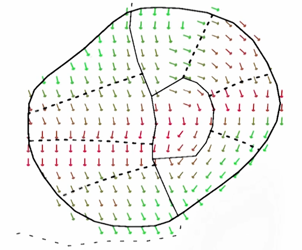
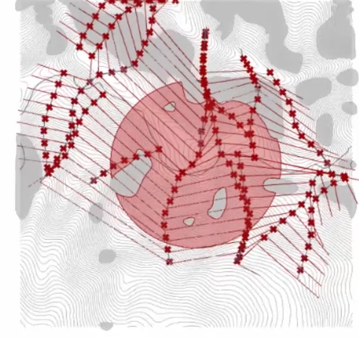
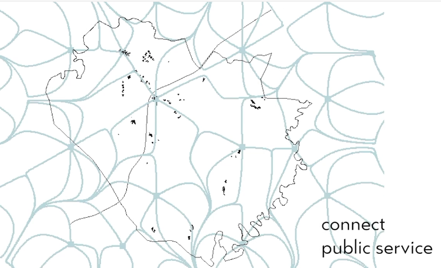

| |  |  | |-|-|-|
Paths grow in the direction of an underlying vector field similar to a magnetic field. The resulting paths are not always straight and more comparable to naturally grown streets.
Provide a vector field or derive date from grey-scale image.
Set starting point from where street should grow.
Field-based paths are i.e. used in CityEngine. By changing the direction 90° perpendicular segments can start from paths. Combining multiple field-based paths, grid-like structures can be created, but the grid deforms and orients itself to the field.
The underlying vector field can be derived i.e. from the terrain, resulting paths might take the steepest path.